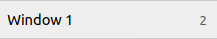
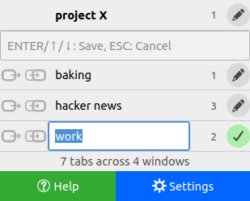
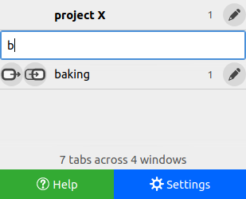

WinMan (Window Manager)
Quick Guide
The WinMan Panel

Click on the WinMan toolbar button to open the pop-up panel.
Every window is represented by a row, showing its name and how many tabs it contains.
The topmost row represents the currently focused window (current window).
The input field below it is the WinMan omnibox.
Below the omnibox is a list of other windows, sorted by most recently focused (seen). So the first row below the omnibox represents the previously focused window.
Below the list is the status bar showing the total number of tabs and windows open.
And at the very bottom are supportive function buttons.
Basic Actions
• Switch Window

Click on a row to switch (change focus) to the corresponding window.
• Send Tab
The send button "sends" the selected tab(s) to the corresponding window while staying on the current window.
Holding Ctrl while doing a switch changes it into a send. Thus, you can also Ctrl-click a row to send tabs to that window.
• Bring Tab
The bring button switches to the corresponding window while "bringing" the selected tab(s) along. Essentially switch and send combined.
Holding Shift while doing a switch changes it into a bring. Thus, you can also Shift-click a row to bring tabs to that window.
Private window behaviour
Private windows are marked with purple names.
Tabs cannot be moved between normal and private windows. However, WinMan can perform a close equivalent: send and bring actions will close tabs in the current window and reopen them in the destination window. Buttons that will perform this are shown purple.
- Page state, such as unsubmitted form data and scroll position, will be lost in the process.
- This will not work for some tabs, such as
file://pages and certainabout:pages.
Edit Mode
The edit button lets you name/rename the corresponding window.
When invoked the panel enters Edit mode, during which you can type in a name and use the following keys:
- Enter to save the currently edited name and exit Edit mode.
- Up or Down to save the currently edited name and edit another window name.
- Esc to close the panel, exiting Edit mode and cancelling any changes to the currently edited name.
The status bar will show the title of the targeted window's focused tab to help you identify the window.
Names must be unique and may not begin with a forward slash ("/").
Note: WinMan assigns every window a default name (Window 1, Window 2 and so on), visible when a window has no user-given name. Unlike given names, default names are temporary and are not guaranteed to persist across browser sessions.

Keyboard Navigation
& The Omnibox
Press to open the panel. You can always check what the keyboard shortcut is by hovering your pointer over
the WinMan button. 
You can use the arrow keys to navigate the panel: Up and Down to select rows, Left and Right to select buttons. Press Enter or Space to activate a row or button.
You should also use WinMan's omnibox – a multi-purpose, multi-talented input field – to vastly accelerate operating WinMan by keyboard.
Primary omnibox powers
- Press Enter to switch to the first window listed below the omnibox.
- Start typing in a window name, or part of it, to filter the list of other windows (which may change the first listed window).
Remember that holding Ctrl or Shift while doing a switch changes it to a send or bring respectively. Don't worry; when empty, the omnibox will remind you which does what.
Thus, to swiftly switch OR send tabs OR bring tabs to a window via keyboard:
- to open the panel.
- If the window row is already immediately below the omnibox, skip to the next step. Otherwise, start typing its name until it is.
-
Enter OR Ctrl+Enter OR Shift+Enter.
Alternatively, use arrow keys to select the desired row or button.
Try it a couple of times; it's easier done than said. 😄

Slash commands
Other actions can be performed by typing one of these slash commands in the omnibox, followed by Enter. Slash commands auto-complete as you type, saving you some keystrokes.
- /help, /h or just / — Open this help page
- /edit or /e — Enter Edit mode to rename windows
- /settings or /s — Open WinMan settings